Copenhagen
Copenhagen, Danish København, capital and largest city of Denmark.
It is located on the islands of Zealand (Sjælland) and Amager, at the southern end of The Sound (Øresund).
A small village existed on the site of the present city by the early 10th century.
In 1167 Bishop Absalon of Roskilde built a castle on an islet off the coast and fortified the town with ramparts
and a moat. In 1445 Copenhagen was made the capital of Denmark and the residence of the royal family.
In the civil and religious conflicts of the Protestant Reformation, the town was often sacked.
During the late 16th century Copenhagen’s trade began to flourish, and the city itself expanded.
Among the new buildings erected were the Børsen (Exchange), the Holmens Church, Trinitatis Church,
with the adjacent famous Round Tower, and the castle of Rosenborg (now the museum of the royal family).
During the wars with Sweden (1658–60) Copenhagen was besieged for two years.
Fires in 1728 and 1795 destroyed many houses and buildings, and in 1807 the city was bombarded by the British.
The ramparts were pulled down in 1856. Since then the city has expanded still further and incorporated many
of the adjacent districts.
Recommended Attractions
Tivoli Gardens

Walking from Town Hall Square and crossing H.C. Andersens Boulevard brings you to the inspiration behind the
Disney theme parks: the famous Tivoli amusement park and pleasure gardens dating from 1843.
It's impossible to miss the grand entrance at Vesterbrogade.
Here, visitors are welcomed through a dramatic archway flanked by columns.
No matter what time of year you visit, Tivoli feels festive.
Inside the gardens, you'll wind your way through a village complete with cute shops and a lake adorned
by well lit trees that are mirrored serenely in the water. That's likely the only serenity you'll
find in this miniature theme park, which brings out the kid in every visitor.
Here, you'll also find more than 20 attractions, including a roller coaster; roundabouts; halls of mirrors;
pantomime, puppet, and open-air theaters; a wealth of restaurants and cafés; flower gardens;
and a Moorish-styled concert hall, which is particularly pleasing when lit up at night.
National Museum of Denmark

An easy 10-minute walk from Tivoli along Vestergade brings you to the National Museum (Nationalmuseet),
a must-see attraction for anyone with an interest in Danish history and culture.
Some impressive runic stones are on display here, and the Danish history collection includes a sun chariot
(cult object in the form of a cart) that is more than 2,000 years old, Romanesque and Gothic church fittings,
Danish porcelain and silver, and collections of antiquities and coins.
The ethnographical collection, including items from Greenland, gives an excellent impression of life among the
Eskimos. Inside, you'll also find collections from other interesting areas including, Asia, Africa and Oceania,
as well as the culture of the Indians.
Den Bla Planet

Although you won't likely notice this from the ground, Den Bla Planet (a.k.a. the National Aquarium Denmark)
was built to resemble a whirlpool. Think that's cool? Head inside where the aquarium's wow factor is even more
impressive!
The largest aquarium in Northern Europe, Den Bla Planet is one of the best attractions in Copenhagen.
The building's aluminum-covered walls evoke rolling ocean waves while the aquarium's inner pathways flow like
tributaries from the central core through eight sections.
These paths are lined by close to 50 aquariums and installations that house everything from eagle rays to turtles
to hammerhead sharks to seahorses to moray eels to alligators. There is no shortage of creatures to see here.
Whether you're hoping to spot ocean animals up close or are interested in the marine life that call tropical
rivers and lakes home, you're sure to find something inspiring in this venue. Watch the otters play,
touch a creature in the tropical touch pool, or visit the café for a treat.
Strøget Shopping Mile
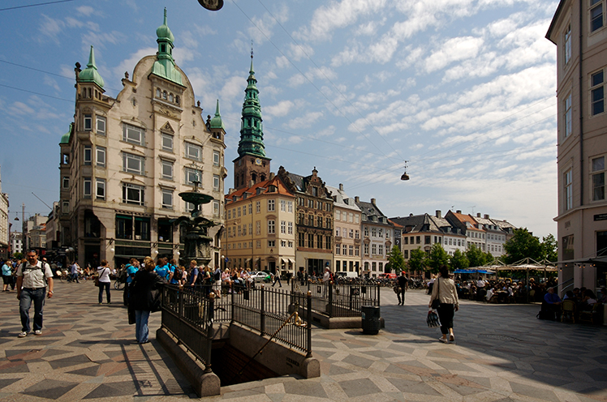
A stroll of around five minutes from Christiansborg takes you to the bustling shopping area of Strøget where
you'll find a wealth of boutiques, cafés, and restaurants.
Strøget, a nickname from the 1800s, consists of several roads crisscrossing one another,
beginning at Town Hall Square (Rådhuspladsen) and ending at Kongens Nytorv.
Some adjoining streets on the north have also been pedestrianized.
International brand-name stores such as Max Mara, Prada, Louis Vuitton, and Hermès tend to be at the end of
the street facing the direction of Kongens Nytorv. Follow Strøget towards City Hall
Square for more affordable shopping at H&M, Weekday, and Zara.
Frederiksberg
Frederiksberg is a part of the Capital Region of Denmark.
It is formally an independent municipality, Frederiksberg Municipality,
separate from Copenhagen Municipality, but both are a part of the City of Copenhagen.
It occupies an area of less than 9 km2 and had a population of 103,192 in 2015.
Frederiksberg is an enclave surrounded by Copenhagen Municipality.
Some sources ambiguously refer to Frederiksberg as a quarter or neighbourhood of Copenhagen,
being one of the four municipalities that constitute the City of Copenhagen (the other three being Copenhagen,
Tårnby and Dragør).[5] However, Frederiksberg has its own mayor and municipal council, and is fiercely independent.
Recommended Attractions
Cisternerne
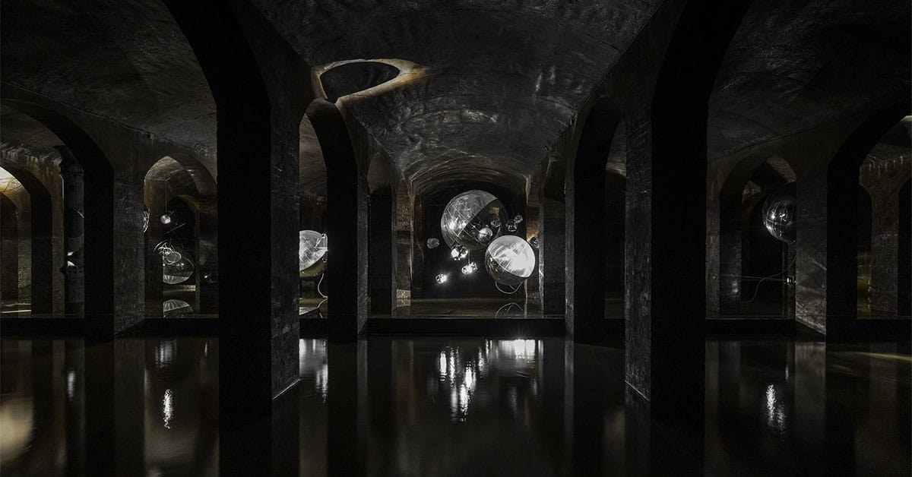
Forget everything about traditional art museums and exhibition spaces.
Nowhere else in Denmark does art become one with the physical surroundings to such an extent as here!
Today Cisternerne is a subterranean art space, where you can withdraw from daily life, where time stands still,
and where the mobile signal doesn’t reach. When the cold climate in Cisternerne embraces you, you are not simply
looking at art – you are completely immersed in art.
The old reservoir is sparsely illuminated, and the atmosphere evokes fascination and enchantment in both children
and adults. Every year we invite an internationally recognized artist or architect to create an exhibition
particularly to this underground space – an exhibition in large scale that interacts with and emphasizes the
unique architecture, climate, atmosphere and history of Cisternerne.
The art projects that unfold in Cisternerne are site-specific and cannot be built or rebuilt any other place
in the world.
Søndermarken
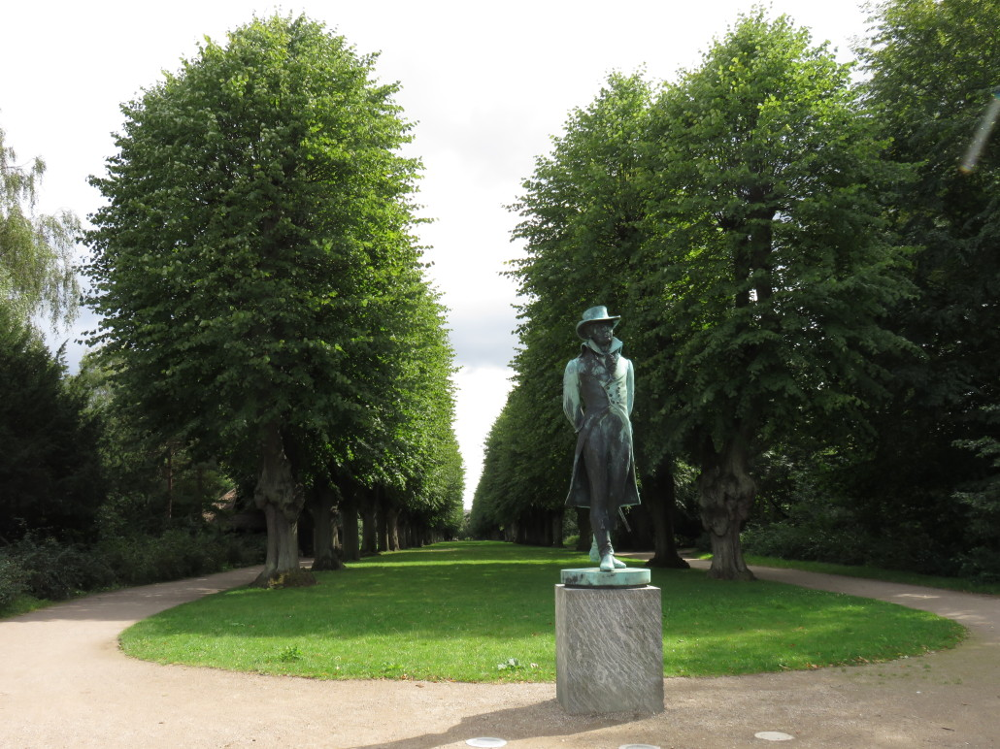
Between Valby and Copenhagen you find Søndermarken – one of Frederiksberg’s many parks offering space and
beautiful nature.
Here you find wild plants, long meadow-like grass and even owls in the old trees.
The locals use Søndermarken for jogging, walking the dog or just strolling in the hilly and forest filled
landscape. You can also visit the playground with your children or experience the cisterns that used to be water
basins supplying clean water to the Copenhageners.
The Danish Music Museum

The Danish Music Museum has existed since 1898, making it one of the oldest museums of musical history in the world.
It features a comprehensive collection of European, Asian, South American and African musical instruments dating
from the 16th to the 20th centuries as well as a library, archives and a comprehensive collection of visual art.
In the new surroundings, the Danish Music museum will have more room for both exhibitions,
the library and educational activities.
The museum also launches its new initiative “The Sound Room”, where children of all ages can have a try at
playing everything from the harp and the kettledrum to the electrical guitar and the xylophone.
When you visit the many exhibitions, you may come across quaint instruments such as the 'amoeba-shaped violin,
'the giraffe piano', and the 'sausage bassoon'.
Gentofte
Gentofte is a district of Gentofte Municipality in the northern suburbs of Copenhagen, Denmark.
Major landmarks include Gentofte Town Hall, Gentofte Hospital and Gentofte Church.
Gentofte Lake with surrounding parkland and nature reserves form the most important greenspace.
Gentofte is roughly bounded by Lyngbyvej to the west, the S-train line to Hillerød to the northeast,
Bernstorffsvej to the east and Kildegårdsvej to the south. The southern border with Hellerup is, however,
not clearly defined.Gentofte, as defined by Gentofte Municipality, covers circa 335 hectares or 13% of the
municipality's total. On 1 January 2012 the district had 8,289 residents,
equaling 11% of the total population of Gentofte Municipality.
Recommended Attractions
Ordrupgaard

If your're interested in arts, then Ordrupgaard is the place for you.Odrupgaard is an exclusive
art museum with a collection that includes names such as Monet, Gauguin, Matisse, Renoir and Hammershoi.
Initially, the museum building served as a manor house. You can still sense the atmosphere throughout the
old rooms and the park. Additionally, you can experience temporary exhibitions and (on weekends) visit the
renowned Danish architect Finn Juhl's house which is a part of the museum. The sculptural extensional adjacent
building is designed by the internationally acclaimed architect Zaha Hadid.
Charlottenlund Fort
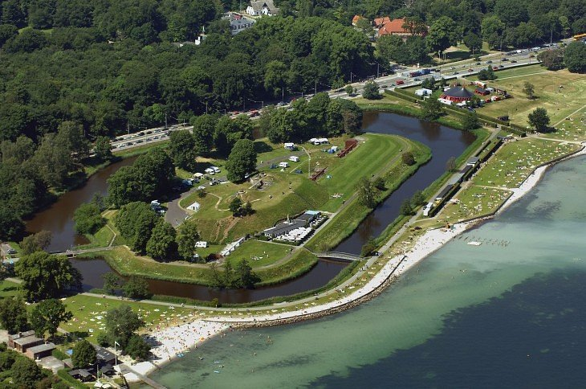
Charlottenlund Fort isn’t just an old military fort. It is also an exciting and beautiful park with a popular
swimming beach and bathhouse. It lies between Charlottenlund Forest and the Sound, and its open green spaces
provide the setting for a host of leisure activities. It affords opportunities for sunbathing, play, ball games,
picnics and a dip in the waves of the Sound.
The fort was built below Charlottenlund Palace as part of the fortifications around Copenhagen
in the years 1886-88. In 1910 it was converted into a regular søfort and was one of the forts designed to
protect Copenhagen from attacks from the sea.
Today, both the fort and its surroundings at the beach park is a popular recreation area,
which has been used for the organization of concerts. Inside the fort area behind the ramparts is a campground,
and the violence on the Øresund catering establishment.
Charlottenlund Travbane
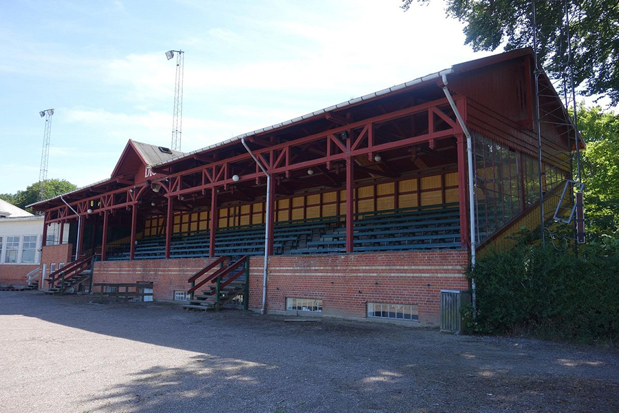
If you're into some traditional horse racing, then the Charlottenlund Travbane is for you. Charlottenlund Travbane
is a harness racing track in the town of Charlottenlund in the Capital Region of Denmark.
The racetrack, nicknamed Lunden, was established in 1891 by the Danish Trotting Club (Det Danske Travselskab).
The annual major events at Charlottenlund Racetrack are the Danish Trotting Derby and international Copenhagen Cup.
Helsingør
Less than 46 kilometers from the capital city of Copenhagen, Helsingor is primarily a busy ferry port.
Countless Swedes make the trip across the short stretch of water from Helsingborg for cheap supplies and
simply to enjoy a day out.
Yet, this unassuming town has plenty of things to do. One of the reasons it's such a popular place to visit is
its Shakespearean past. For this is Elsinore, home to Hamlet's castle, the mighty Kronborg.
The medieval quarter is particularly pleasant place to visit on foot and has some fascinating buildings,
such as the beautifully preserved Carmelite Monastery (Karmeliterklostret) attached to St. Mary's Church
(Sankt Mariæ Kirke). Throughout the streets of the old town, you'll find boutiques, atmospheric cafés,
and charming restaurants.
Recommended Attractions
Kronborg Castle

A UNESCO World Heritage Site, Kronborg Castle is the setting of Shakespeare's Hamlet and the top tourist attraction
in Helsingor. In the northeast of town, on a peninsula in the Øresund (the sound on which Helsingor sits),
the towering castle is plainly visible from afar.
Originally, a fortress built around 1420 by Eric of Pomerania stood here. A new castle, a four-winged building
with an enclosed inner courtyard, was built between 1574 and 1584 under Frederick II. After a catastrophic fire
in 1629, King Christian IV had the castle rebuilt between 1635 and 1640.#
For more than 100 years, the structure served as a garrison and, in 1924, it was renovated. The Castle Chapel
lies in the South Wing with a splendid Renaissance interior and woodcarvings from Germany.
The North Wing contains the great Ballroom or Knights' Hall. Superb tapestries are on display in the West Wing.
National Maritime Museum of Denmark

The National Maritime Museum is one of the top places to explore Denmark's seafaring legacy.
Set underground in the old dry docks of the revamped former shipyard area next to Kronborg Castle,
and designed by renowned Danish architects BIG (Bjarke Ingels Group), the collections are dedicated to the
country's rich maritime history.
The informative and dramatic exhibits include relics from Denmark's conquests in Greenland, India,
the West Indies, and West Africa. The area is also the site of the Culture Yard; a theater, concert venue,
library, and restaurant housed in a cutting-edge glass and steel structure created from old wharf buildings.
Danish Museum of Science and Technology
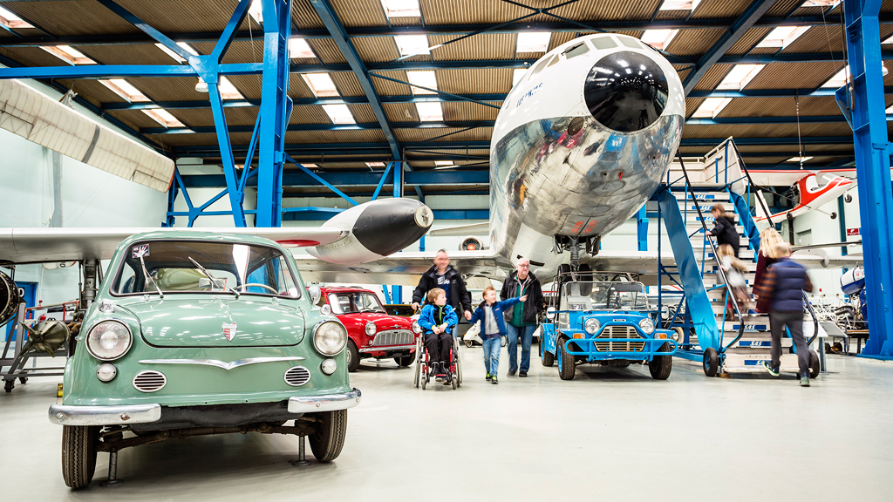
Just three kilometers from the town center, and in a fittingly industrialised zone, you'll find this privately
funded museum dedicated to Denmark's impressive technological achievements. Stretching over some 8,000 meters,
the museum is housed in a former iron foundry dating from the 1960s.
There's a comprehensive collection of steam engines, various inventions, electrical appliances, bicycles,
vintage cars, and aeroplanes. Alongside all this, the museum is home to a functioning pewter workshop and
exhibits dedicated to the discovery of electromagnetism and the "Telegraphone," the forefather of modern tape
recording.
The aviation section, with more than 30 flying machines, including one that's claimed to be the first ever to
take flight in Europe (sadly unrecorded), is particularly interesting.
St. Olaf's Church

Built in 1559, the striking red brick Gothic cathedral of St. Olaf's (Sankt Olai) nestles in the heart of town.
Named after the Norwegian King Olav, who was canonised, the church is adorned with various depictions of him.
The building, originally a church, but consecrated as a cathedral in 1961, was completed in 1559, however its
history dates back to the 13th century. Remains of ancient decorations adorning the old Romanesque chapel that
once stood here can still be seen in the north wall of the nave. Other points of interest include Dutch alabaster
altarpieces, the beautifully carved pulpit, and a number of frescoes.
Hillerød
Hillerød is a Danish town with a population of 35,357 (1 January 2022) located in the centre of North Zealand
approximately 30 km to the north of Copenhagen, Denmark. Hillerød is the administrative centre of
Hillerød Municipality and also the administrative seat of Region Hovedstaden (Capital Region of Denmark),
one of the five regions in Denmark.
It is most known for its large Renaissance castle, Frederiksborg Castle,
now home to the Museum of National History. Hillerød station is the terminus of one of the radials of the S-train
network as well as several local railway lines. The town is surrounded by the former royal forests of Gribskov
to the north and Store Dyrehave to the south.
Recommended Attractions
Frederiksborg Castle
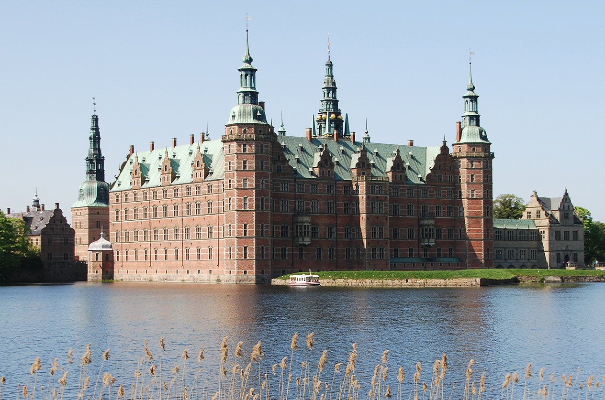
Frederiksborg Castle is beautifully situated on three small islets in the Castle Lake in Hillerød.
Within the castle’s walls there are major cultural attractions for the whole family, while the highly picturesque
setting is perfect for peaceful walks in the gardens and boat trips.
Frederiksborg Castle was built by King Christian IV in the early decades of the 17th century and is the largest
Renaissance complex in the Nordic region. The aim of the building was to show off and enhance Christian IV’s
status as a powerful European monarch. Accordingly the castle is richly adorned with symbolic and decorative
elements: for example, the impressive Neptune Fountain and the Marble Gallery of the King’s Wing.
Since 1878 Frederiksborg Castle has housed The Museum of National History, which presents 500 years of Danish
history with a collection of portraits, history paintings, furniture and applied art. The Museum was established
by the founder of Carlsberg, brewer J. C. Jacobsen, and ever since has been an independent department of the
Carlsberg Foundation.
Æbelholt Klostermuseum

Æbelholty Klostermuseum is just outside Hillerød. See the ruins of the largest Scandinavian Augustine monastery.
Only a few ruins are left of the once extensive building complex.
Imagine the Abby in its heyday during the Middle Ages. Travelers and the poor could find a meal here.
The Abby also functioned as a hospital. At the museum, you can see some of the 800 skeletons found in
archaeological digs around the Abby. Meet the young girl who died in childbirth.
The dead tells a story of disease, life and death in the middle ages.
Hillerød Town Museum

Hillerød Town Museum is an atmospheric and cosy museum which tells the story of Hillerød throughout 500 years:
from medieval village to royal borough and until today.
In Time Street on the first floor, you can experience a journey through the 19th and 20th centuries.
Look into the recreated shops and workshops that have existed in Hillerød, see the old classroom, and enjoy
everyday situations and snapshots from the past.
In the basement lies the working Graphic Museum, where former printers and typesetters passionately
keep the old craft alive. Watch them work with the machines Wednesdays from 11 am to 2 pm.
In the basement lies the working Graphic Museum, where former printers and typesetters passionately keep the old
craft alive. Watch them work with the machines Wednesdays from 11 am to 2 pm.
Århus
Denmark's second largest city, Aarhus (or Århus) lies on the east coast of Jutland, where the river Aarhus Å flows
into the picturesque bay of the same name. First mentioned in 928 CE as the seat of a Bishop, it received its
municipal charter in 1441.
From the Middle Ages onwards, it served as an important commercial, seafaring, and fishing center, a tradition that
lives on due to the area's popularity among sports anglers. The wealth generated by merchants during the city's
early heyday is clear today in the many well-preserved Renaissance buildings you'll see as you explore its many
tourist attractions.
To find evidence of an even earlier era, stroll through Klostergade, Volden, and Borggade in the Latin Quarter.
This interesting neighborhood replaced the old Viking fortifications in the late 14th century. But this quarter
is far from frozen in time. Today, it's a lively enclave, with boutiques, cafés, and restaurants lining its narrow
stone-paved streets.
An important cultural center with an outstanding fine arts museum, Aarhus is also well known for its vibrant music
scene. Frequent concerts and festivals embrace everything from folk, jazz, rock, and pop, to chamber music and
operatic performances held in historic venues and churches.
Recommended Attractions
Den Gamle By

Den Gamle By, or "The Old Town," is a fascinating open-air museum consisting of more than 75 historic buildings
collected from across Denmark. Each of them were dismantled and reassembled in Aarhus for preservation.
Dating from the 16th to the early 20th century, this remarkable collection has been assembled as if it really was
an authentic "old town." The effect is further enhanced by the fact these superb old houses, shops, workshops,
and windmills still function just as they did in the past and serve as a time capsule preserving a bygone era.
Highlights of a visit include seeing the former Burgomaster's house from 1597, a remarkably well-preserved
building that is home to a fine collection of furniture. Also notable are the merchant's house, a stilt-house,
a two-storied stone house, and a storehouse. The largest building is the majestic Coin Master's Mansion,
a newer "old" addition erected on the site in 2009.
A toy museum, textile museum, and historical musical collection are also worth seeing. So, too, are the bicycle
museum; the apothecary's shop, complete with healing herbs; and the workshops once belonging to candlemakers,
coopers, and shoemakers. The museum also holds special exhibitions of historical costumes.
Five restaurants and cafés are located here, some serving traditional hearty foods. English language guided
tours by costumed guides are also available.
ARoS Aarhus Art Museum

The ARoS Aarhus Art Museum (ARoS Aarhus Kunstmuseum) is one of the largest art museums in Europe. Housed in an
impressive 10-story building that is itself a work of art, the museum's most remarkable architectural work of art
is Your Rainbow panorama.
This remarkable circular walkway is surrounded by glass in a spectrum of colors, created by Danish-Icelandic artist,
Olafur Eliasson. Mounted on columns 3.5 meters above the roof, the walkway is 150 meters long and three meters
wide. As you walk around it, you'll get views of the city and bay in rainbow colors. You can access Your Rainbow
through the 310-square-meter Roof Pavilion.
Highlights of the Kunstmuseum collections include artwork from the Danish Golden Age (1770 to 1900),
Danish Modernism (1900 to the 1960s), and contemporary art. Works span all genres and mediums, including
sculpture and installations.
Afterwards, stick around for a little sustenance at the on-site café or restaurant. You can also take in a show,
enjoy a lecture or workshop, or join an English language guided tour.
Moesgård Museum

A short drive south of Aarhus is the superb Moesgård Museum, or MOMU. Built on the grounds of the historic
Moesgård manor house, where the original museum was housed, this well-designed attraction opened in the autumn of
2014 and offers a comprehensive account of Denmark's history from the Stone Age right up to Viking times.
A particularly popular attraction is the Grauballe Man (Grauballemann), a body dating back more than 2,000 years
that was found perfectly preserved in a nearby bog. A café and gift shop are also located on the premises.
English language guided tours are available.
In the open-air section of the museum is the fun Prehistoric Trail (Oldtidssti). This fun trail meanders through
the woods and fields of the estate, passing replicas of prehistoric houses and burial mounds.
Aarhus Cathedral

The picturesque inner city of Aarhus consists of a semi-circle enclosed by a ring road (Ringgade).
At its heart lies the Great Market (Store Torv) in which stands Aarhus Cathedral (Sankt Clemens Kirke)
dedicated to St. Clement.
While the original structure was begun in the 12th century, the current church dates largely from the early 1500s.
Some Romanesque features can still be found in the external walls, and the chapels on the east side of the
transepts also date from this time. The present façade, with its single tower and anchor motif, dates from the
same period.
Highlights of the cathedral's bright interior include the winged altar from 1497 with its rich array of figures.
Also worth seeing are the beautifully carved 16th-century pulpit, two organs, and a font. The vault paintings
date from the 15th century and portray St. Clement as the patron saint of the church and Christ sitting in judgment.
English language guided tours can be arranged with advance notice, and are available during and outside of
normal visitor hours.
Herning
Herning is a Danish city in the Central Denmark Region of the Jutland peninsula. It is the main town and the
administrative seat of Herning Municipality. Herning has a population of 50,565 (1 January 2022)
including the suburbs of Tjørring, Snejbjerg, Lind, Birk, Hammerum and Gjellerup, making Herning the 11th most
populous urban area in Denmark.
Herning was established at the beginning of the 1790s, during the period of heath reclamation, as a
commercial centre providing goods and services to the farmers in the area. A textile industry later developed in
and around the town. This industry was once Herning's principal economic activity. Today, the town has a more
diversified industrial base. Herning became a market town in 1913. Herning has twice been awarded the title of
Danish City of the Year.
Recommended Attractions
HEART Herning Museum of Contemporary Art

The HEART Herning Museum of Contemporary Art is an art center located in the city of Herning, in the Jutland peninsula, Central Denmark.
The museum, founded in 1977, is housed since 2009 in an iconic 60,000 square-foot / 5,600 square-meter building
designed by acclaimed American architect Steven Holl. The museum was designed by Holl as a fluid-shaped
single-story building with reflective pools positioned in front of its south side.
The architect was inspired by the presence in the site of a 1960 circular construction that currently
houses part of the art collection of the HEART and once was a shirt factory. Therefore, Holl designed
a new building whose shape “resembles a collection of shirtsleeves viewed from above”.
The museum’s collection is focused on modern and contemporary Danish and international art, from the 1930s onward –
with a special focus on Italian post-war art and Arte Povera, and on concrete and constructive art –
including works by Piero Manzoni, Lucio Fontana, Mario Merz, Joseph Beuys, Jannis Kounellis, Ole Schwalbe,
Victor Vasarely, Ingvar Cronhamma, and Dennis Oppenheim, among others.
Carl-Henning Pedersen & Else Alfelts Museum
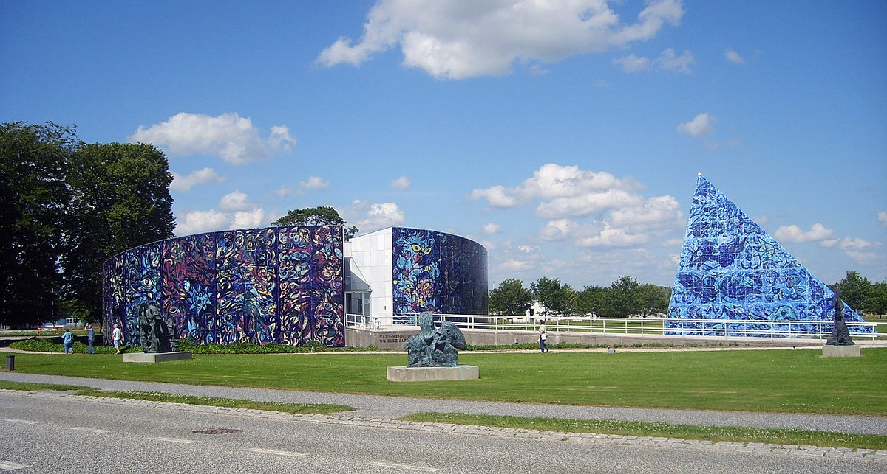
Carl-Henning Pedersen & Else Alfelts Museum is an artist museum built around a unique collection of the couple's
works. Carl-Henning Pedersen donated several thousand of his and his wife's pictures to the city of Herning,
which established the museum in 1976. The museum holds a total of more than 6000 works by the two artists.
The Carl-Henning Pedersen & Else Alfelt Museum was inaugurated in 1976 and originally consisted of a circular
exhibition building. In 1993, the museum was expanded with a three-sided pyramid, and in 2015, the former shirt
factory Angligården was connected to the other museum buildings via two new large exhibition halls underground.
On Saturday 25 June 2022, a large part of Prince Henrik's popular sculpture collection was handed over to the
museum. Queen Margrethe II visited the museum that day. For a number of years, the Queen has been depositing a
number of works from her private collection of the Prince's sculptures.
Step into the magical worlds and be ready to wander around among mythical animals and powerful creatures in a
vibrating universe.
Søby Brunkulslejer

Søby Brunkulslejer (brown coal field) is situated by Søby in Kølkær parish aprox. 15 km south from Herning.
The brown coal fields cover a listed area at around 1000 hectare and it is estimated that there has been produced
around 50 million cubic metres of brown coal from the period 1940 - 1970.
Today, the area is a hilly nature area with lots of small lakes, but some of the area is dangerous to go to since
there are risks of slides.
North of Søby lies Søby sø which is not from the brown coal-digging but a natural heath lake.
In 1939, the production in the fields started out little by little. At first it was by hand, shovel, wheelbarrow,
spade and horse carriage. Later the hand tools were supplemented with excavators and conveyer belts.
Quickly, a town developed around the fields - the houses being small sheds and barracks, railway carriages and
worn-out coaches. The area was called The Jutlandic Klondike.
Visit the fields and make your way around the small houses and experience how life as a brown coal-worker was.
Holstebro
Holstebro is the main town in Holstebro Municipality, Denmark. The town, bisected by Storåen
("The Large Creek") and has a population of 36,489 .
Holstebro has a large network of pedestrian walkways (gågader) in the town centre either side of the River Storå.
This area has a varied shopping environment, enhanced by outdoor sculptures and picturesque buildings,
including the town church and the Town Hall. The first sculpture purchased by Holstebro Municipality was
Alberto Giacometti's sculpture "Maren on vehicle" purchased in 1966.
Holstebro has a rich and varied cultural life. Between 1997 and 2009 it hosted the internationally recognized
ballet company Peter Schaufuss Ballet and the town still hosts the performance art theatre Odin Teatret.
Several museums, including the Holstebro Art Museum with its collection of Danish and international contemporary
art, and the Holstebro Museum can be found in the town.
The town holds an annual culture festival, the Holstebro Festive Week, in late summer. The Holstebro Hall,
rebuilt in 1966, houses a music theatre, the Holstebro Convention and Culture Center (1991) and provides space
for theatre presentations, concerts, exhibitions and conventions. More than 100 cultural events occur here
every year, and the hall is visited by more than 100,000 people annually.
Recommended Attractions
Flamingo Naturpark
Flamingo Nature Park is a beautiful nature park and have a unigue experience.
Small "rooms" and oasis spread out in the park make the perfect settings for an extraordinary picnic.
Bring out picnic basket and find your favourite spot to enjoy the park and the calm atmosphere.
The pavilion is the perfect backdrop if you want a different party, and here you can decorate and cover up in
many different ways. Around the building runs an outdoor terrace with exquisite views of the lakes.
The park boasts no less than 20 different kinds of water lilies in the many lakes and lagoons.
In the park you will also encounter the Lady of the Bog and the Statue of Liberty. You are welcome to enjoy your
packed lunch in the garden. You can sit outside in the cozy courtyard, where there is also a barbecue,
which you are welcome to use. It is also possible to eat your packed lunch indoors if it is not dry weather.
Flamingo Nature Park is handicap friendly in the sense that the paths are as far as possible in hard material,
which makes it possible to use a wheelchair around the garden.
Holstebro Kunstmuseum

Danish and international art from the 1930s until today alongside traditional non-western art.
Husby Klitplantage

Husby Klitplantage close to the North Sea consists of a hilly dune landscape covered by heath vegetation and dune
grass, which passes into pine and pine forest. Further inland grow beech and other deciduous trees.
In the plantation you can, among other things, experience crustaceans, roe deer, bird king, buzzard, tower falcon
and natravn.
The dune "Marens Maw" (Marens Mave) lies on the edge of the forest areas and the dune heath in the western part
of the plantation. The view of the wild North Sea, the quiet Nissum Fjord and Husby Klitplantage is fantastic.
The 'pot' in the plantation's west side is a characteristic dune formation - a so-called parabola dune.
Wind and weather have created the pot, where all sand is blown away down to the groundwater.
In the plantation there are two nature camp sites. In this unique plantation there is a popular swimming lake,
Skavemosen The lake is relatively shallow and suitable as a bathing lake - also for the smallest.
There are tables / benches and barbecue. The lake is a dug lake, where among other things live pike and perch.
There are a large number of marked hikes, - bike, riding and running routes in the area.
Horsens
Horsens is a Danish city in east Jutland. It is the site of the council of Horsens Municipality.
The city's population is 57,517 and the municipality's population is 87,736. The municipality is also a part of the
East Jutland metropolitan area, which has 1.2 million inhabitants.Horsens is best known for its culture and
entertainment events. Horsens New Theatre is a cultural centre which holds over 200 events annually.
It has managed to draw major names such as Bob Dylan, Madonna and The Rolling Stones. GeographyHorsens lies at the
end of Horsens Fjord in eastern Jutland. The city is surrounded by typical moraine landscape with low hills and
valleys created by glaciers during the last ice ages. Horsens is 50km south of Aarhus and 30km north of Vejle,
and approximately 200km from Copenhagen.HistoryIt is believed the name Horsens derives from the old Danish words
hors (horse) and næs (naze, headland). From the 12th century the name Horsenes is known.
The earliest traces of a city are remains of a pagan burial site and houses dating back to the 10th century.
In the 12th century, the kings Sweyn III and Valdemar I issued coins in the city. In the 13th century the city
got its own legal code
Recommended Attractions
Horsens Art Museum

With its impressive collection of contemporary Danish art by the greatest contemporary artists,
Horsens Art Museum will undoubtedly be a great experience – regardless of whether you love art or the world of art
is an undiscovered territory for you.
The beautiful and striking building housing Horsens Art Museum is located at the top of the park Caroline Amalie
Lund whose beauty draws you in.
The focal point of the museum is contemporary Danish art and its collection gives you an insight into what is
happening within Danish art. The collection includes works by major new Danish artists and has an experimental
character ranging from the beautiful to the grotesque and through-provoking. The works give rise to dialogue,
wonder and reflection.
So take your family and talk about art, beauty, life and society while touring the bright and welcoming galleries.
Bygholm Lake

Prepare yourself for a great nature experience. The beautiful and idyllic Bygholm Lake is located near the centre
of Horsens in connection to Bygholm Park. Go for a hike in wooded terrain along the shores of the lake,
all the way around. The area is perfect for hiking, running, MTB and other outdoor activities.
Bygholm Lake is an very popular excursion destination for the inhabitants of Horsens. Here you will encounter dog
walkers, runners, MTB riders and horseback riders, anglers and orienteerers. Along the lake is a
7.5-kilometre-long route that is perfect for hiking and running. Åbjerg Forest leads all the way down to the lake,
and here you will encounter many trails and routes that you can explore. Try for instance the trail around Bygholm
Lake, which consists of two marked routes that are 1.9 and 9.4 kilometres long respectively.
These trails lead visitors to the many historical sites on the route.
A trip to Bygholm Lake can be combined with a visit to the beautiful old manor park Bygholm Park,
which is connected to the lake. Here you have the opportunity to enjoy a good meal or an overnight stay at
Hotel Scandic Bygholm Park.
If you want to stay all the way down to the lake, then this is possible at Bygholm Lake Camping in exceptionally
beautiful surroundings. Here you can sleep in a tent or a caravan and there are also shelters on the campsite area.
Also make sure to visit the old passage grave Grønhøj, which is more than 5000 years old. The passage grave is
on the south side of the lake.
FÆNGSLET
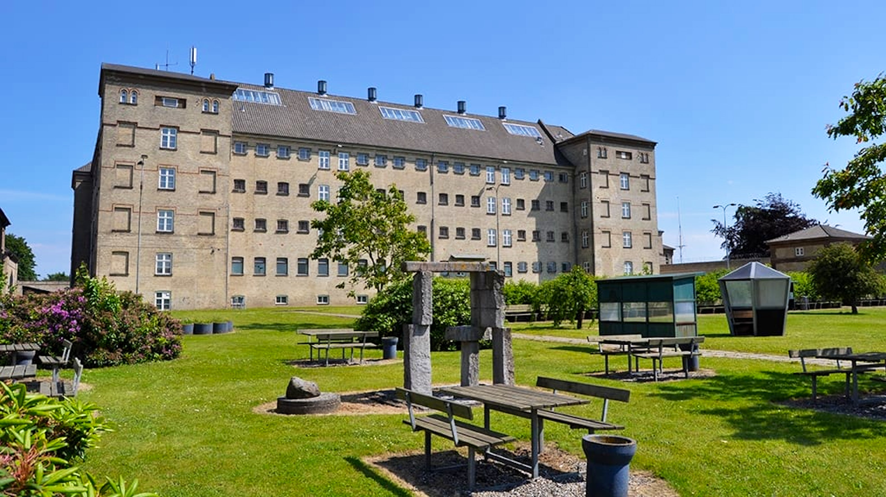
With its successful combination of fascinating cultural history and great contemporary cultural experiences,
the old Horsens State Penitentiary attracts hundreds of thousands of people every year. Visit the popular museum,
participate in large and small events or try spending the night behind bars.
Do you need to put your own life into perspective? Then visit the Prison in Horsens and learn about and sense the
thought-provoking stories that unfolded here. Because the PRISON commands your attention.
For most people, life behind prison walls is an unknown, closed world. However, at Fussingsvej in Horsens,
hard work is undertaken every day to open it up, creating an energised and active atmosphere. You are invited
inside to gain a unique insight into prison life. And the minute you drive through the gates, you see it.
That everything is still where it was when it was Horsens State Penitentiary.
But the Prison in Horsens is more than rough walls, prison yards and cell blocks. It is a five-branch enterprise
comprising of a museum, conference venue, youth hostel, events and home to entrepreneurs as well as commercial
lettings. All branches work based on a mission to create experiences beyond the ordinary and to be a beacon in
Horsens that helps to make the city something special.
The Prison Museum lets you get really close to life behind bars. Listen to the stories of the prisoners and the
grim and fascinating stories from the more than 150-year history of the prison. See the incredible escape tunnel
of the famous escapee Carl August Lorentzen and visit the old cells where the lives of the inmates unfolded.
Randers
Randers is a city in Randers Municipality, Central Denmark Region on the Jutland
peninsula. It is Denmark's sixth-largest city, with a population of 62,802. Randers is the municipality's main
town and the site of its municipal council. By road it is 38.5 kilometres (23.9 mi) north of Aarhus, 43.8
kilometres (27.2 mi) east of Viborg, and 224 kilometres (139 mi) northwest of Copenhagen.
Randers became a thriving market town in medieval times, and many of its 15th-century half-timbered houses remain
today, as does St Martin's Church, also from that period. Trade by sea was facilitated through the Gudenå River,
entering Randers Fjord. During industrialization, Randers quickly became one of the most important industrial
towns in the country, but it saw itself outpaced by the cities of Aarhus and Aalborg at the beginning of the 20th
century. Most of the larger historic industries in Randers are gone today. From 1970, the population saw a decline
from a peak of 58,500 citizens, until a stabilization in the 1990s occurred, followed by a modest rise since then.
The main tourist attraction is Randers Tropical Zoo thanks to its artificial rainforest, the largest in Northern
Europe, its 350 varieties of plant and over 175 species of animals. The city's football team, Randers FC, play
their homes games at the AutoC Park Randers, and are in Denmark's first league, the Superligaen. The town is also
home to Randers rugby union club and Jutland RLFC, a rugby league team, as well as Randers Cimbria, a Basketligaen
team that took 2nd place in the 2013–2014 season.
Recommended Attractions
Memphis Mansion
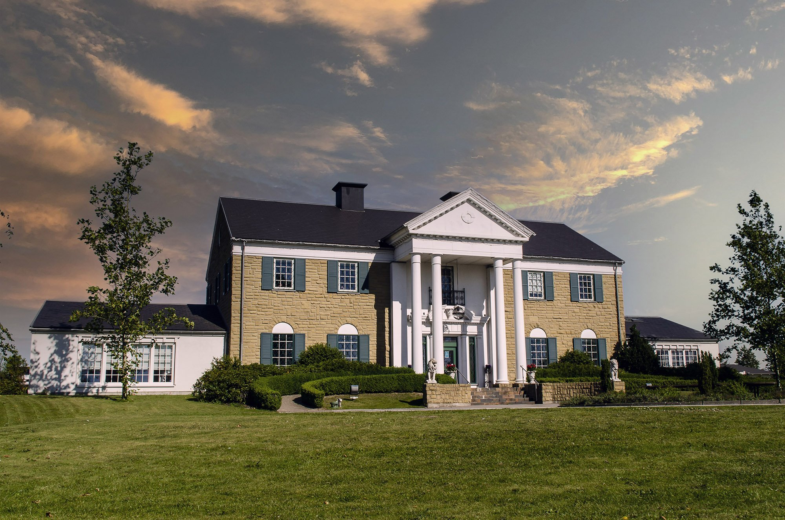
Memphis Mansion in Randers is a tribute to Elvis Presley the King of Rock’n’Roll and to Conny Cash The Man In
Black - and the facade of the museum is identical to Graceland in Memphis.
The building houses an American Diner Highway 51, Elvis Museum, a souvenir shop and party rooms.
The museum is based on a large collection of things involving Elvis. The collection belongs to the owner of
Memphis Mansion, Henrik Knudsen. Randers is the only place outside the USA that has its own Elvis museum.
The building houses an American Diner Highway 51, Elvis Museum, a souvenir shop and party rooms. The museum is
based on a large collection of things involving Elvis. The collection belongs to the owner of Memphis Mansion,
Henrik Knudsen. Randers is the only place outside the USA that has its own Elvis museum.
Highway 51 Diner is All American - both in interior and food, that is made from recipies from the southern states.
It is an unique in Denmark - Elvis would eat here!
Entrance is free for children under 12 years, when accompanied by an adult.
Naturepark Randers Fjord

Naturpark Randers Fjord is among the largest nature reserves in Denmark, and this is where the fresh water meets
the salt water in the Kattegat. On the stretch from the centre of Randers to the outlet in the Kattegat,
the inlet’s ‘blue band’ displays the most stunning scenery with flowering salt meadow, large reed forests,
shallow tidal flats, and great vantage points.
Together with the fjord itself, the forests of reeds and beach meadows along the fjord are home to a rich bird
life, and the fjord also contains a great variety of fish species.
In several places in the area, tables and benches, shelters and bird watching towers can be found, which the
]guests in the area can freely use.
In two places in Naturpark Randers Fjord, you have the possibility of crossing the fjord by ferry.
The ferry sails across the fjord from Mellerup to Voer and at Udbyhøj. The Mellerup-Voer ferry service can boast
of being the oldest royally licensed ferry service in Denmark dating back to 1740 and is also the smallest ferry
in Denmark. Where Randers Fjord flows into Kattegat, you can take Denmark’s only cable-drawn ferry at Udbyhøj.
Høj Stene Burial Monument

Experience Høj Stene, one of the oldest burial monuments in Northern Europe dating back to the Iron Age.
This ancient monument is found near the banks of Gudenåen river and its historic barge puller towpath,
so you can easily combine your visit there with a scenic hiking or canoeing trip.
The stones in this rediscovered burial monument has been set in the shape of a ship and has been used for
performing a burial ritual for a person of power – perhaps a king or a queen? It so happens that gold was found
in the centre of the ship setting, and ornamentation on the gold discloses that the burial took place around the
year 600.
You will access Høj Stene by parking your car at Kongensbro Kro inn near Gudenåen river and then walk along the
river’s barge puller towpath – the monument will then appear on your right.
Silkeborg
Silkeborg is a Danish town with a population of 49,747. Silkeborg is the seat of Silkeborg City Council (with
92,024 inhabitants as of 2018).
Silkeborg is located in the middle of the Jutlandic peninsula, slightly west of the geographical centre of
Denmark. The city is situated on the Gudenå River in the hilly and lush landscape of Søhøjlandet,
surrounded by Denmark's largest forest district and a great number of lakes. Silkeborg is also known as
Denmark's outdoor capital. The lakes between Silkeborg and Ry that are linked by the Gudenå, are known
collectively as Silkeborgsøerne (the Silkeborg lakes).[3] The city is divided along an east–west axis by the
lake of Silkeborg Langsø, which at the eastern side of the city, flows into the Gudenå River.
Recommended Attractions
Museum Jorn

The Museum Jorn in Silkeborg is located in beautiful nature directly on the river Gudenåen.
The museum was founded by Asger Jorn (1914-1973), one of the most important Danish artists of the 20th century.
The museum houses Denmark's second largest art collection, which, in addition to Jorn's own works, also includes
prominent works by other important Danish and international artists of the 20th century - a total of over 30,000
objects by over 600 artists, including Per Kirkeby, Francis Picabia, Lucio Fontana, Pablo Picasso, Jean Arp,
Max Ernst, Jean Dubuffet, Pierre Alechinsky, Georg Baselitz, Andreas Slominski and Erwin Wurm.
Hjejlen
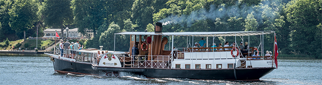
Come and experience scenic Silkeborg from the water, on the historic steamer Hjejlen. It's an experience for
the whole family, and will take you back in time.
Hjejlen is the world’s oldest original coal-fired paddle steamer still in operation. Daily throughout the summer,
Hjejlen and the other excursion boats in the Hjejle fleet sail from Silkeborg to Himmelbjerget and on to the small
station town of Laven.
The trip from Silkeborg to Himmelbjerget takes 1 hour and 15 minutes. Finally, you have the opportunity to
experience the scenic Silkeborg lakes on an evening trip on board Hjejlen or one of the other boats.
Skive
Viborg
Ålborg
Frederikshavn
Hjørring
Nørresundby
Skagen
Thisted
Holbæk
Kalundborg
Køge
Maribo
Nakskov
Nykøbing Falster
Roskilde
Slagelse
Sorø
Vordingborg
Åbenrå
Esbjerg
Fredericia
Haderslev
Kolding
Nyborg
Odense
Ribe
Sønderborg
Svendborg
Tønder
Vejle